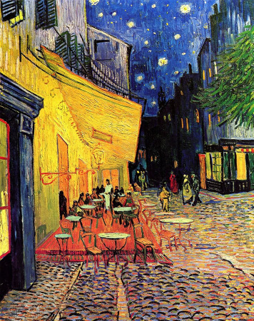
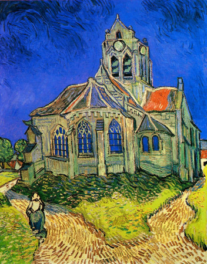
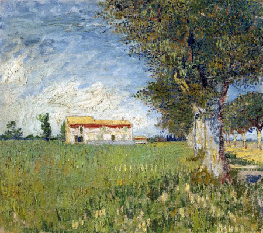

_______I. Salvador Dali_______ II. Pablo Picasso_______ III. Van Gogh_______ IV. Da Vinci_______
Vincent Willem van Gogh, nació en Zundert, Países Bajos; el 30 de marzo del año 1853. Hijo de un pastor protestante llamado Theodorus van Gogh y de Anna Cornelia Carbentus, de cuyo matrimonio nacieron 5 hijos. Cursó sus estudios hasta los 15 años en el Instituto Hannik Tilburg. Intentó hacerse teólogo en 1877, pero por no saber ni griego, ni latín, fue rechazado. Fue enviado a Bélgica como misionero a la región de Mons entre los mineros de Borinage. Sus primeras composiciones revelan sus experiencias como predicador, en la tosa y directa Los comedores de papas, siendo uno de los diez únicos grabados que hizo durante su carrera. Viajo a París en 1866, lugar donde empezó a vivir con su hermano Théo, quien era marchante de arte y fue allí, que comenzó a familiarizarse con las nuevas propuestas artísticas que se encontraban en auge. La influencia de Ando Hiroshige y Hokusai, entre otros, lo motivó a experimentar con las técnicas del momento. Paul Gauguin fue uno de los artistas quien se dejó contagiar por su entusiasmo, una fusión artística impresionante pero que no duró mucho, a los dos meses la armonía se vino al suelo y comenzaron a tener fuertes enfrentamientos, a tal limite que Van Gogh se atrevió a amenazar con una navaja a Gauguin; víctima del remordimiento, Van Gogh esa misma noche se cortó la oreja. Estuvo hospitalizado en un manicomio y en ese mismo tiempo aprovecho para trabajar, pero preso de sus ataques de locura. Durante tres meses en Auvers fue atendido por un médico Paul Gachet, al cual le pinto un retrato en 1890. En 1890 culmina su inquietante Cuervos sobre el trigal y fue el 27 de julio, de ese mismo año, cuando se dispara en el estómago un tiro, se fue arrastrando hasta su casa en Auvers, y a los dos días en los brazos de su hermano, muere finalmente.
|  | |
 |  | |